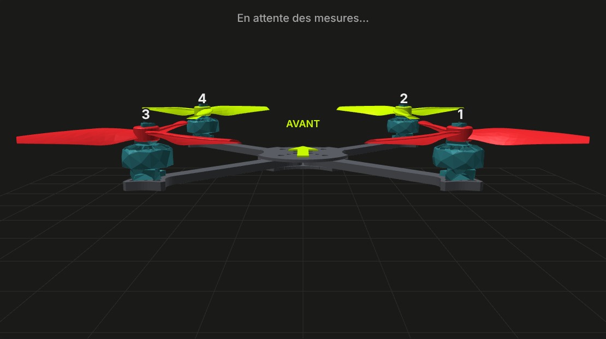
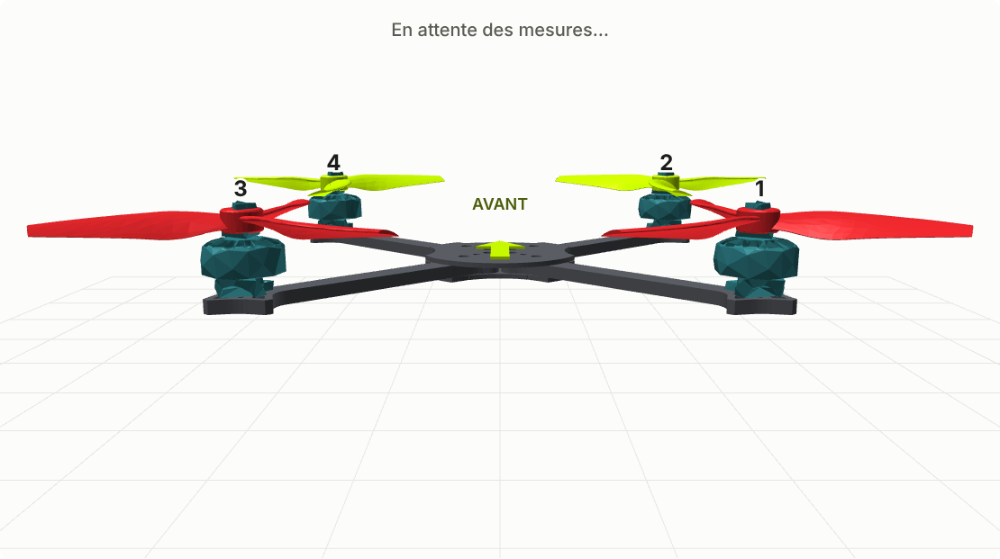
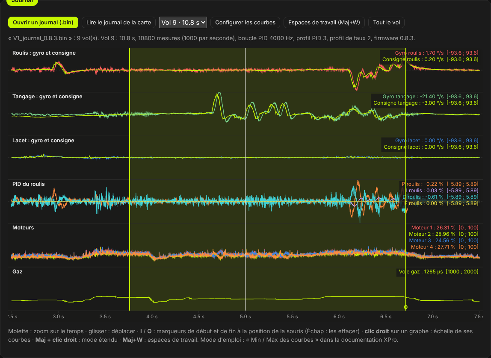
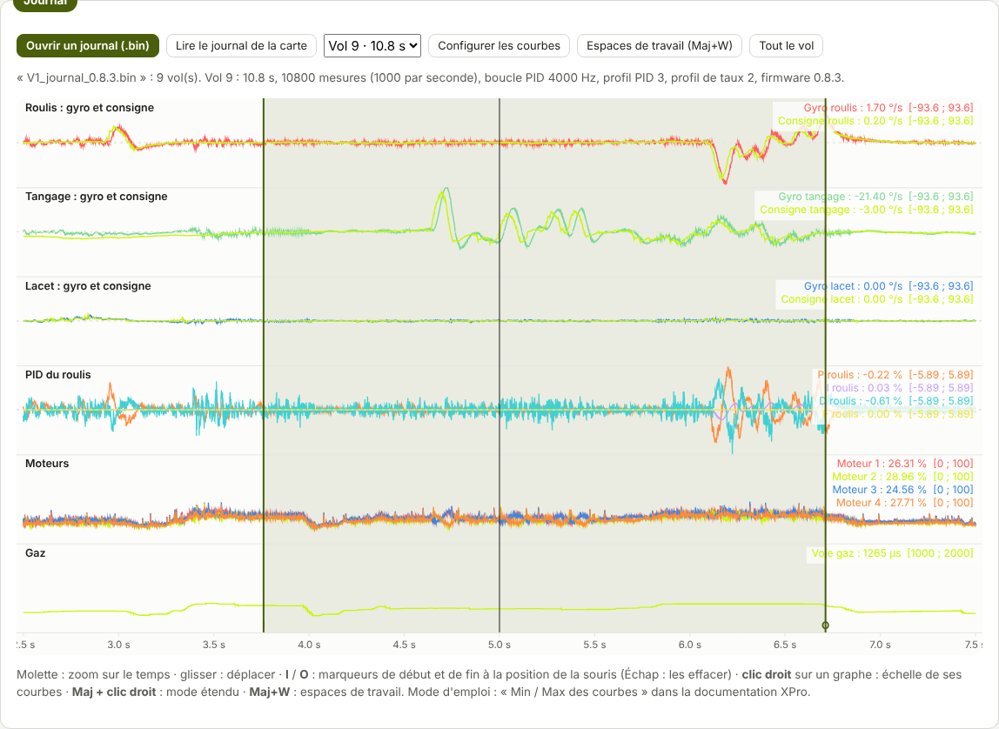
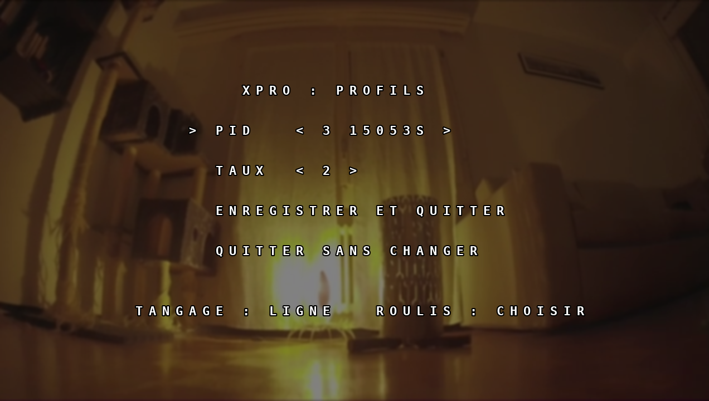
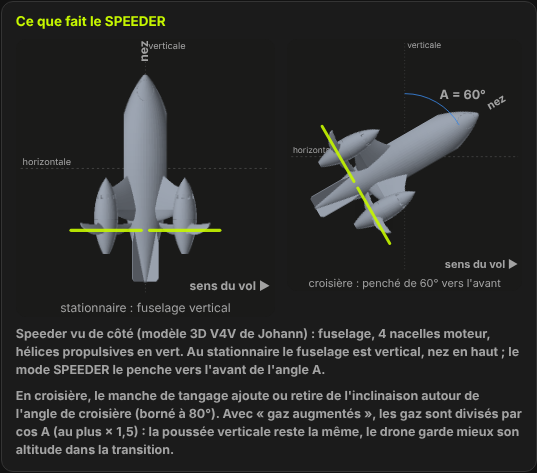
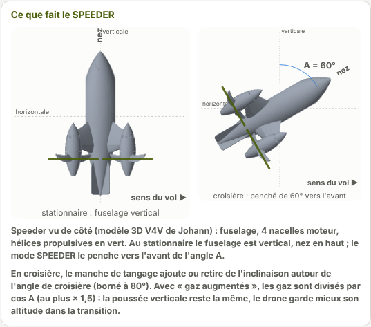

TRUEGLIDE
TRUEGLIDE Ce que fait XPro
Chiffres mesurés sur la carte de KarRmen, au banc ou en vol, sauf quand la plage d'un réglage est indiquée.
Régulation
Gyroscope ICM-42688-P lu à chaque interruption, PID à 4 kHz, filtres dynamiques et filtre RPM sur 3 harmoniques.
Moteurs
DShot300 bidirectionnel : la vitesse de chaque moteur revient à chaque trame, et sert au filtre RPM et au journal.
Réglages Betaflight
Un diff all de Betaflight se colle dans la ligne de commande : chaque réglage est géré, ou accepté avec la raison pour laquelle il est sans effet.
OSD et lunettes
OSD HD Walksnail aux places de Betaflight, statistiques de fin de vol, enregistrement lancé à l'armement, et menu des profils aux manches.
Journal de vol
Gyroscope brut et filtré, consignes, P, I, D, F, moteurs, vitesses, voies, tension et courant, dans la flash de la carte.
Fonctions TrueGlide
Mode SPEEDER (transition stationnaire vers croisière), power_guard, relance d'un moteur, télémétrie de secours.
Ce que XPro fait en plus
Comparé à Betaflight 2025.12, le firmware de référence (celui de KarRmen avant XPro). Toutes les fonctions en plus sont coupées par défaut : rien ne change tant que vous ne les réglez pas.
| Fonction | XPro | Betaflight |
|---|---|---|
| Gaz limités quand un ESC chauffeAu-delà de la température réglée, les gaz collectifs baissent d'autant plus vite que l'ESC dépasse le seuil ; les corrections de la régulation restent entières. « ESC HOT nn% » dans les lunettes. | oui | alerte seulement |
| Gaz limités au-delà d'un courantProtège batterie et câbles ; jamais sous un plancher réglé (50 % par défaut). « AMP LIM nn% » dans les lunettes. | oui | non |
| Relance d'un moteur calé en volUn moteur décroché est repéré en 10 ms en comparant sa vitesse à celle des autres, coupé 50 ms puis ramené en 100 ms. « M2 RESTART » dans les lunettes. | oui | non |
| Mode SPEEDERPassage du stationnaire au vol rapide sur un interrupteur : le drone penche jusqu'à l'inclinaison de croisière, à la vitesse réglée, puis revient. | oui | non |
| Valeur enregistrée à côté de chaque réglageCe qui a changé est encadré, avec « revenir » sur chaque valeur et « Tout revenir » : on essaie sans risque de perdre son réglage. | oui | non |
| Visualiseur Blackbox dans le logicielLe journal de la carte s'ouvre en un clic, avec échelles Min / Max, marqueurs et espaces de travail. | intégré | application à part |
| Réglage de départ calculé d'après le droneHélice, moteurs, batterie, masse et entraxe : régime des moteurs, filtres, filtre RPM, ralenti, protections et PID de départ, chaque valeur expliquée et appliquée d'un clic. | oui | presets par taille |
| Analyse d'un vol dans le logicielRésonances du châssis (coupe-bande proposé), nombre de pôles des moteurs, saturation, décrochages, réponse aux manches, avec les corrections proposées. | oui | à lire soi-même (Blackbox Explorer) |
| Contrôle du KV des moteursMoteurs à 20 % pendant 3 s, hélices retirées : la vitesse mesurée est comparée au KV saisi, un écart net est signalé. | oui | non |
| Rapport de banc en un clicVersion, état complet et 20 relevés du gyroscope dans un fichier, prêt à envoyer pour un diagnostic. | oui | à copier à la main |
Comparaison faite sur les fonctions publiées de Betaflight 2025.12. Une valeur inconnue s'affiche toujours « -- » dans XPro : jamais un chiffre supposé.
Un réglage fin, sans rien perdre
Toutes les pages de réglage de Betaflight, et une façon de régler pensée pour le terrain et pour les essais.
En direct, réversible
Chaque valeur agit dès qu'on la change ; la valeur enregistrée reste affichée à côté, et rien n'est gardé avant « Enregistrer ».
Profils sur le terrain
Profils PID et profils de taux nommés, choisis dans le logiciel ou aux manches dans le menu des lunettes, sans PC.
PID complets ou curseurs
P, I, D, D max et F par axe, ou huit curseurs de réglage simplifié appliqués d'un clic ; anticipation, anti-gravité, TPA, ralenti dynamique.
Courbes calculées
Courbes des taux, du TPA et des filtres tracées depuis les réglages lus dans la carte, avec les formules du firmware ; sans carte, pas de courbe plutôt qu'une fausse.
Vos réglages Betaflight
Un diff all se colle dans la ligne de commande ; les taux ACTUAL ont été comparés aux consignes enregistrées par Betaflight sur les vols de KarRmen.
Presets et journal
Un réglage complet dans un fichier, à partager ou à remettre en deux clics ; le journal du vol pour vérifier ce que le réglage a changé.
Le logiciel
Toutes les pages de réglage de Betaflight, mises en ordre pour être lues d'un coup d'œil, et des outils en plus.







Télécharger
Bientôt disponible. Le téléchargement ouvrira après les essais en vol en cours. Un seul fichier contiendra le logiciel et le firmware de la version ; il s'ouvre dans Chrome ou Edge sur un ordinateur (accès USB par Web Serial).
Logiciel XPro
- Ouvrir le fichier, brancher la carte en USB, Connexion.
- Flasher le firmware : le firmware 0.8.4 est déjà dans le fichier.
- Avant le premier flash : Sauvegarde complète de la carte, pour revenir à Betaflight à tout moment.
Firmware
- Carte prise en charge : SpeedyBee F405 Mini (STM32F405, ICM-42688-P, baromètre DPS310 / SPL06).
- Récepteur CRSF (ExpressLRS), ESC en DShot300 bidirectionnel, émetteur vidéo Walksnail en MSP.
- Version de banc et de premiers vols : chaque version passe un essai écrit avant de voler.
Essais
Chaque version est essayée sur KarRmen avec une fiche, et chaque résultat est gardé dans le journal des essais.
- Premier firmware XPro sur la carteFlash depuis le logiciel, USB, gyroscope, attitude dans la vue 3D.
- Radio, batterie, OSDRécepteur CRSF à 308 trames/s, batterie 4S reconnue, premier OSD XPro dans les lunettes.
- MoteursDShot bidirectionnel : les 4 ESC répondent, aucun codage faux.
- Boucle rapide sous 125 µs99 µs au plus, charge 46,7 %, enregistrement des lunettes lancé à l'armement.
- Premier volStationnaire stable en mode ANGLE, sans oscillation, moteurs froids.
- V2 : vol dehorsMenu des lunettes, échelles du PID mesurées sur les vols Betaflight, vol de 30 s.
Documentation
Les modes d'emploi du logiciel, avec des captures prises sur les vrais vols.